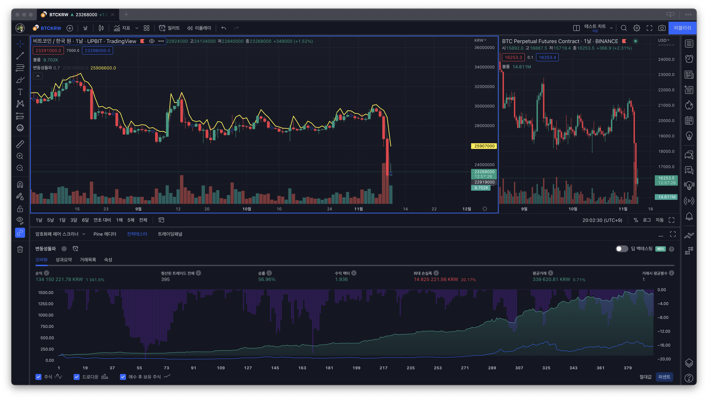

최근에 파이썬으로 변동성 돌파 전략을 응용한 자동 매매 봇을 만들었습니다. 업비트 API로 웹소켓을 연결하고 실시간 데이터를 받고 정해진 전략에 따라 매매하는 구조입니다. 테스트겸 며칠 돌렸는데 요즘 장이 안좋아서 큰 재미는 보지 못했습니다. 파이썬은 몇번 쓱 보긴 했지만 개발에는 처음 사용해봤는데, 참 쉬우면서도 재미있는 언어였습니다. 덕분에 오랜만에 즐겁게 개발했네요.
문제는 백테스트(Backtest)였습니다. 백테스트는 과거 가격 데이터를 이용해서 현재 로직을 검증해보는 것을 말합니다. 지금도 변동성 돌파를 기반으로 한 전략들이 잘 먹힐지, 최근의 하락장에서는 어떤 모습을 보일지 직접 테스트해보고 싶은데 생각보다 쉽지 않았습니다. 과거 데이터를 받아다가 돌려봐야하는데, 전략을 계속 수정하고 로직이 복잡해지다보니까 이게 생각보다 어렵더군요. 공수도 많이 들구요.
그러던 차에 좋은 툴을 발견했습니다. 투자를 해보신 분들이라면 트레이딩뷰(TradingView)에 대해서 들어보셨을 겁니다. 실제로 많은 분들이 사용하고 계신 차트 서비스인데요. 예전에 처음 접했을 때는 그냥 차트에 그림 그리고 관점 공유하는 서비스 정도로만 생각했는데, 그게 아니었네요. 차트를 대고 스크립트를 짜서 직접 돌려볼 수 있는 엄청난 기능이 있었습니다.

이때 사용하는 언어가 파인 스크립트(Pine Script)입니다. RSI, MACD, BB 같이 사용자가 직접 코딩해서 나만의 지표(indicator)를 그려볼 수 있고, 더 나아가 언제 매수하고 매도할지 전략(strategy)을 짜서 수익이 얼마나 나올지 백테스트까지 할 수 있었습니다. 여기에 알림을 발생시켜서 웹훅으로 쏠 수도 있다니, 왜 이걸 이제야 알았는지 아쉬울 정도입니다.
트레이딩뷰에서 API 문서를 보면서 익히고 변동성 돌파, 동적자산배분 등을 직접 테스트해봤습니다. 여러가지 아이디어들을 바로바로 코드와 기간을 수정하면서 테스트할 수 있다는게 놀라웠습니다. 진입 지점을 캐치해서 알림을 생성하고, 웹훅을 쏴서 텔레그램을 통해 시그널을 보내거나, 별도로 웹훅 서버를 만들어서 자동매매봇을 만들 수도 있습니다. 이 과정을 파이썬으로 전부 짜는 방법과는 일장일단이 있을 것 같네요.
무엇보다 파인스크립트는 쉽고 심플한 언어입니다. 다만 처음에 시작할 때 차트와 함께 쓴다는 점 때문에 알아야할 것들이 좀 있는데, 찾아보니 한글로 된 자료는 그렇게 많지 않았습니다. 그래서 블로그에 파인 스크립트와 전략 만들기에 대한 내용을 연재해보려고 합니다.
코딩을 할 줄 알면서 나만의 전략을 만들고 싶은 분들이나, 아이디어는 있는데 코드로 구현하고 싶으신 분들 등 수요는 분명히 있을 것 같습니다. 간단한 도구이기 때문에 코딩 왕초보 분들도 가능하실 것 같고, 오히려 차트에 대한 지식과 아이디어, 투자 경험 등이 파인 스크립트를 활용해서 돈을 벌기에 더 중요할 것 같습니다.